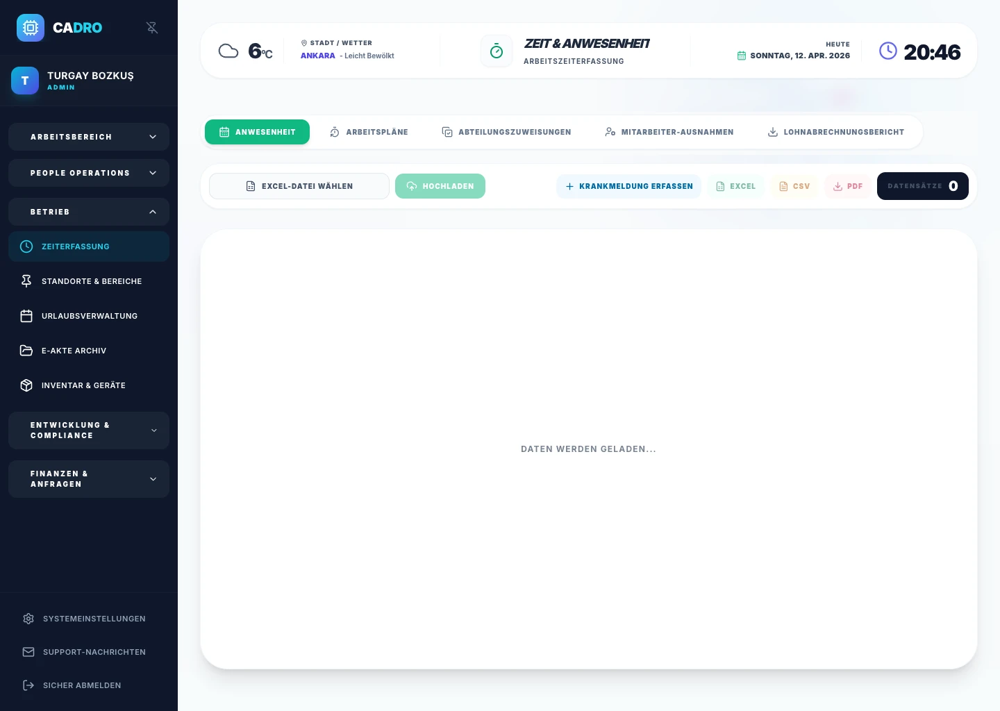

Schichtvorlagen und Zuweisungen
Erstellen Sie Schichtvorlagen und weisen Sie sie Teams oder Mitarbeitenden zu. Änderungen erscheinen sofort im Kalender.

Zeiterfassung & Schichtplanung
Das moderne Zeiterfassungs- und Schichtmanagementsystem: Sammeln Sie Ein- und Ausgangsdaten, Schichtpläne, Ausnahmen und payroll-fertige Berichte in derselben zentralen Struktur. CADRO hilft HR- und Betriebsteams, ihre zeitbasierten täglichen operativen Personalprozesse effizienter, sichtbarer, kontrollierter und messbarer zu gestalten.

Verteilte Anwesenheitsdaten, manuelle Schichtverfolgung und verspätet in der Lohnabrechnung ankommende Ausnahmen führen zu fehlender Transparenz in zeitbezogenen Abläufen.
Eine zentrale Struktur, die Anwesenheit, Einsatzpläne, Teamzuweisungen, Anpassungen und payroll-fertige Berichte in einem einzigen Ablauf zusammenführt.
Sauberere Zeitdaten, höhere Schichtdisziplin und schnellere Entscheidungen vor der Lohnabrechnung.
Modulfunktionen
Erstellen Sie Schichtvorlagen und weisen Sie sie Teams oder Mitarbeitenden zu. Änderungen erscheinen sofort im Kalender.
Definieren Sie Regeln für Überstunden, Verspätungen und vorzeitiges Gehen. Das System erkennt Abweichungen automatisch.
Verfolgen Sie Anwesenheit in Echtzeit über mehrere Standorte hinweg mit automatischer Datenkonsolidierung.
Exportieren Sie verifizierte Zeitdaten direkt in die Lohnabrechnung, ganz ohne manuelle Nachbearbeitung.
Erkennen Sie Trends und Risiken über wöchentliche und monatliche Übersichten mit automatischen Warnungen.
Planen und veröffentlichen Sie Dienstpläne mit Team-Standards und integrierten Freigabeabläufen.
Warum CADRO?
Jede Anwesenheitsbuchung wird sofort verifiziert und für HR- sowie Management-Teams bereitgestellt.
Arbeitsrechtliche Vorgaben und interne Richtlinien werden automatisch überwacht und dokumentiert.
Nächster Schritt
Kontaktieren Sie uns für eine Demo oder starten Sie direkt mit dem Pro-Plan.